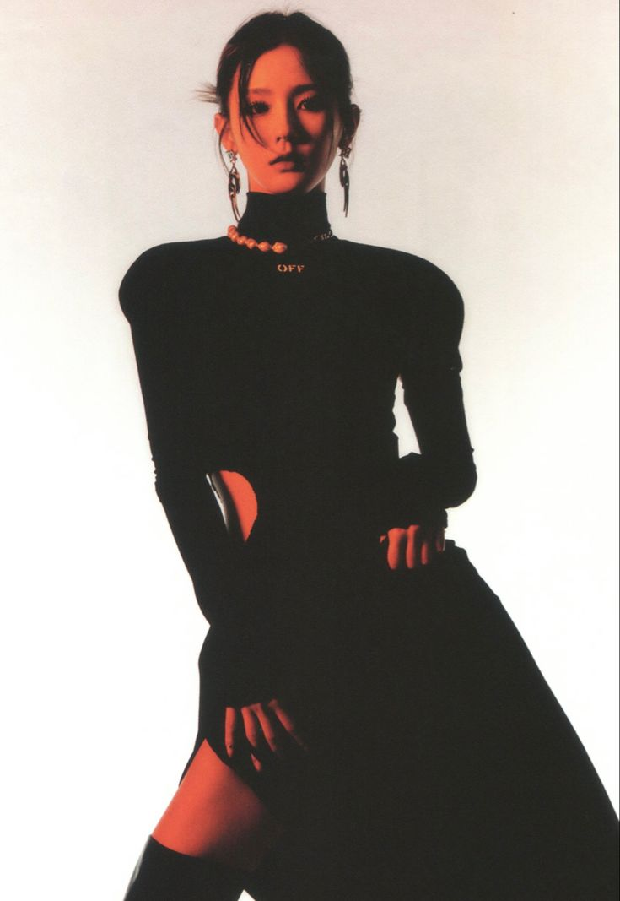
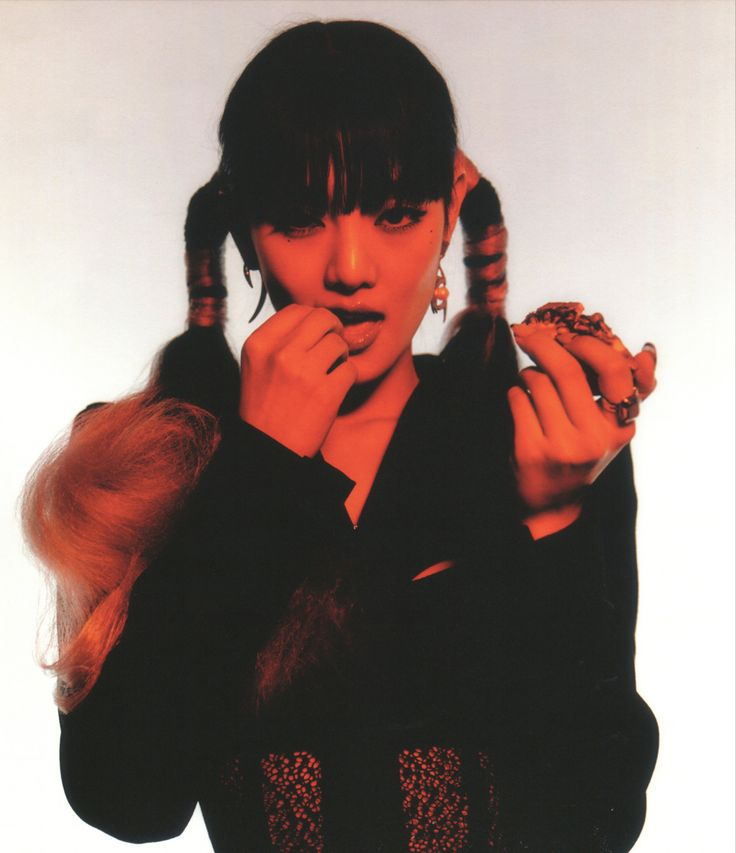

Minnie, cuyo nombre completo es Nicha Yontararak, nació el 23 de octubre de 1997 en Bangkok, Tailandia. Desde joven, mostró un gran interés por la música y el canto, ya los 16 años decidió mudarse a Corea del Sur para seguir su sueño de convertirse en cantante. Minnie se unió a CUBE Entertainment en 2014, donde comenzó su formación como trainee. Su talento y dedicación rápidamente la hicieron destacar, y el 2 de mayo de 2018 debutó como miembro de (G)I-DLE con el sencillo "LATATA", junto a sus compañeras.
Minnie es conocida por su distintiva voz suave y melódica, que le ha permitido destacarse como una de las vocalistas principales del grupo. A lo largo de su carrera con (G)I-DLE, ha sido parte fundamental de canciones como "Senorita", "LION" y "Oh My God", en las que su capacidad vocal ha quedado demostrada. A pesar de ser una de las integrantes extranjeras del grupo, Minnie ha logrado conectarse profundamente con los fans tanto en Corea como a nivel internacional, gracias a su talento, carisma y su dominio del idioma coreano, lo que le ha permitido integrarse perfectamente al grupo.
Además de su carrera con (G)I-DLE, Minnie también ha explorado su talento en proyectos en solitario, incluyendo la composición y la participación en diversas colaboraciones musicales. Su influencia se ha expandido más allá de la música, participando en programas de televisión y mostrando su personalidad genuina y alegre, lo que ha ganado la simpatía de sus seguidores. Con su impresionante voz y su presencia en el escenario, Minnie sigue siendo una figura clave en (G)I-DLE y continúa ganándose el respeto de la industria musical del K-pop, mientras continúa.
|
|
 |
|  |
|
|